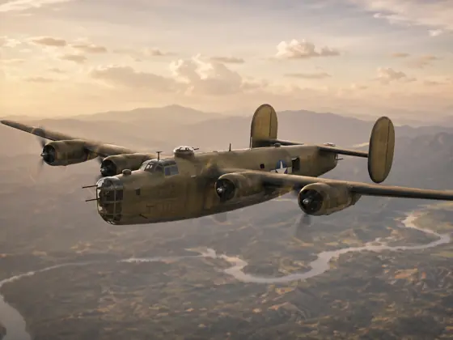

B-24 operations · 1941–1945
The B-24 was the global heavy bomber: Ploesti, Eighth Air Force daylight raids, Fifteenth Air Force Mediterranean missions, CBI long-range bombing, Atlantic anti-submarine patrol and Pacific island campaigns. A good model starts with the variant and theatre. Early B-24D aircraft, later H/J/L/M turret-nose Liberators and Navy PB4Y patrol aircraft all need different noses, turrets, paint and weathering.

Role & strengths
- USAAF heavy bomber and long-range patrol aircraft
- Ploesti, Eighth Air Force, Fifteenth Air Force, CBI, Pacific and Navy PB4Y routes
- Davis wing, tricycle gear, deep fuselage and multiple turret configurations
- Olive Drab/Neutral Grey, natural metal, anti-submarine white/grey and nose art
- Four-engine exhaust, oil staining, walkway wear, turret grime and dusty theatre finishes
Key theatres
- Operation Tidal Wave and Ploesti oil raids
- Europe and Mediterranean daylight bombing
- CBI and Pacific long-range heavy-bomber operations
- Atlantic and Navy PB4Y patrol routes
Specification B-24J
Survivors today

Surviving B-24s are useful for nose/tail turrets, cockpit framing, waist guns, bomb bay, nacelles, tricycle gear and Davis-wing stance, but restored schemes still need subject checks.
View survivorsTimeline highlights
Build this B-24 as…
Pick the theatre and nose first. A Ploesti B-24D, Eighth Air Force B-24J, Fifteenth Air Force natural-metal Liberator, CBI aircraft and Navy PB4Y patrol route all need different details.
Aircraft identity
B-24D, H, J, L, M and PB4Y routes differ in nose, turrets, waist guns, radar and markings. Match the kit to the subject.
The B-24’s tricycle gear and high Davis wing define the silhouette. Nose weight, gear strength and wing alignment matter.
Paint scheme cards
Ploesti and early heavy-bomber routes use OD/Neutral Grey with heat, dust and oil.
Late B-24Js need subtle panel variation, anti-glare panels and exhaust streaking.
Navy PB4Y routes need patrol finishes, radar/antenna checks and salt-weathering logic.
Weather nacelles, wing roots, bomb bay, turrets and underside in separate layers.
Campaign cards
B-24D route with low-level oil-refinery raid context, OD/Neutral Grey and intense mission story.
European heavy-bomber route with group markings, nose art and natural metal or OD finishes.
Mediterranean Liberators with dust, sun fading, oil staining and long-range bombing routes.
Long-range operations, maritime patrol, island bases and theatre-specific grime.
Build difficulty and related guides
Very high. Four engines, turrets, glazing, bomb bay, tricycle gear and size all need careful planning.
Very high. Nose/tail turret and waist-gun changes are easy to get wrong.
High. Four-engine exhaust, natural metal, OD fading and maritime routes all need different handling.
B-24 Bomb Groups and Navy PB4Y units
Sortable B-24 unit cards covering Ploesti, 8th Air Force, 15th Air Force, CBI, Pacific, Navy PB4Y patrol and survivor/reference routes.
B-24 operating map
Airfield info
Click a marker to show linked B-24 unit cards and modelling notes.
Campaign timeline
Survivors
Books and reference sources
B-24 build guide
B-24 videos, photos and archive material
Media replaces the old separate walkaround tab: cockpit, exhaust, undercarriage, markings, survivor references, archive imagery and video cards are grouped here.